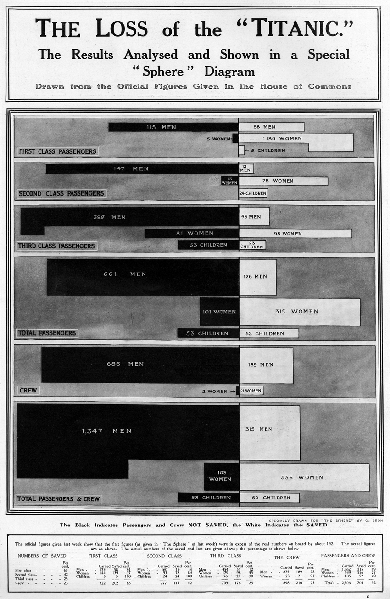
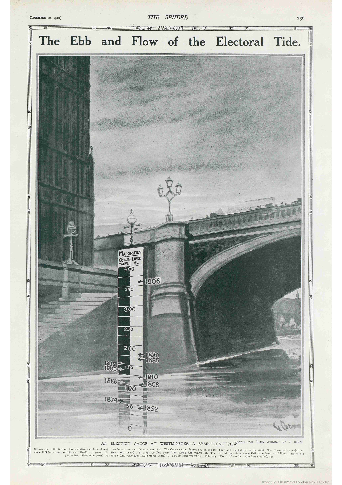
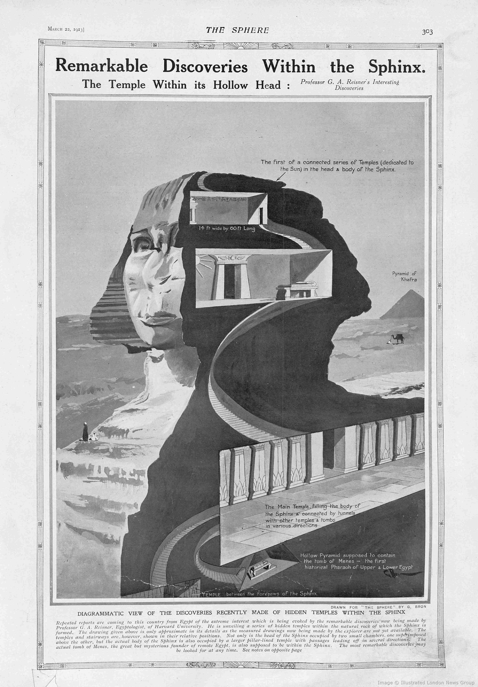
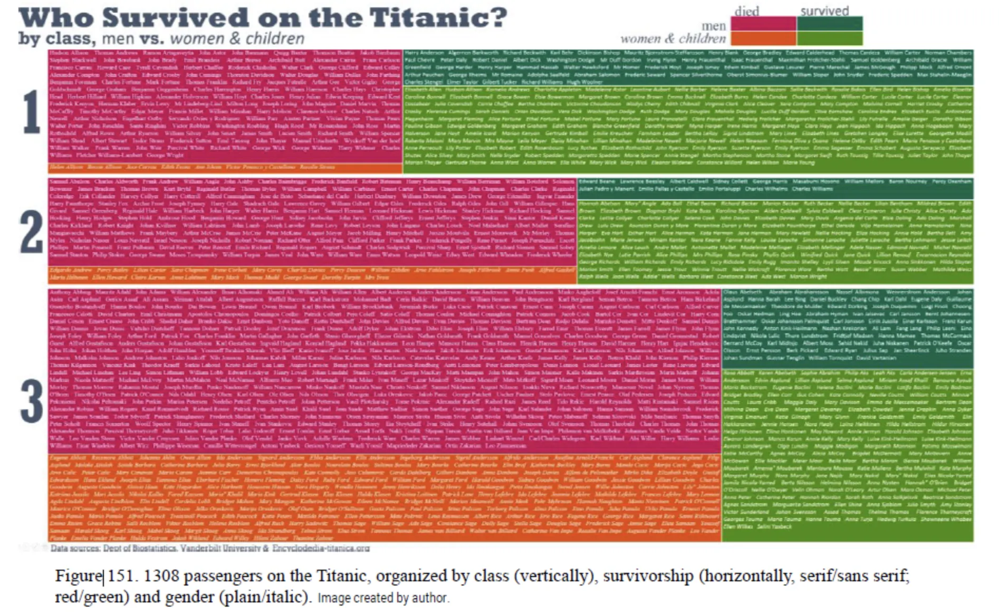
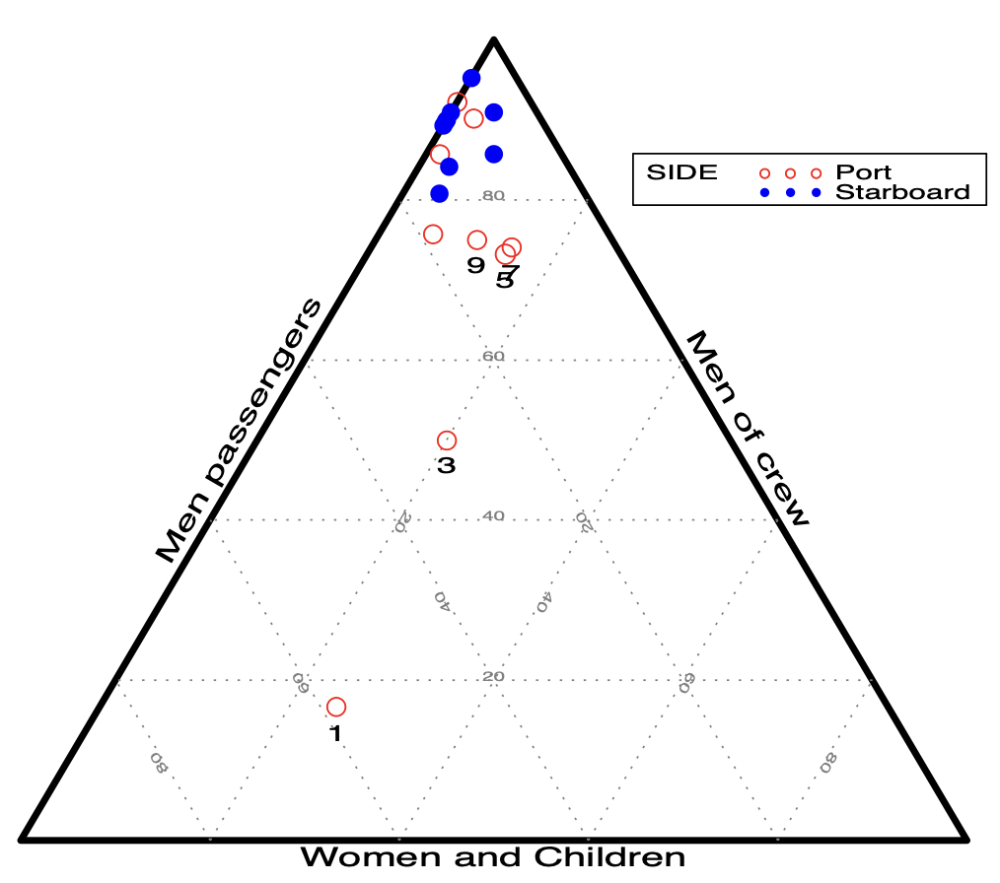
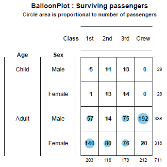
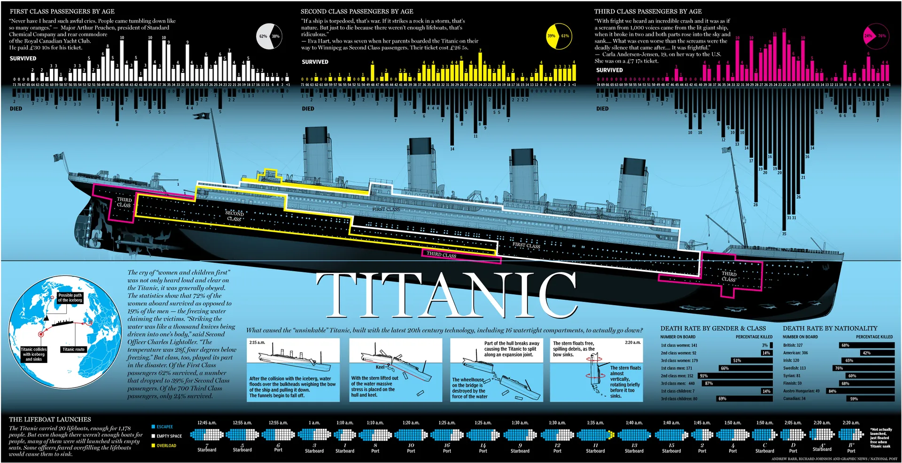

Bottoms up
Titanic survival analysis
Analyzing passenger statistics from the RMS Titanic

Man overboard
Prioritizing female and child safety increased fatality rates among 3rd class male passengers
The sinking of the RMS Titanic is one of the most storied shipwrecks in maritime history. Touted as the ultimate in transatlantic travel and said to be “unsinkable”, the Titanic collided with an iceberg on April 14th, 1912, on her maiden voyage and sank shortly after on April 15th, killing 1,502 out of 2,224 passengers and crew.
The sinking of the Titanic is not the largest in terms of lives lost at sea. But it is the one that has been documented most thoroughly — in government reports and personal accounts of survivors, and in numerous books and several popular movies.
This is one legacy of the Titanic disaster, but it left another: a wealth of data, comprising details of passengers and crew, complete with names, ages, passenger class, and even cabin numbers for those in first and second class.
I recently discovered an early data visualization showing survival among the Titanic passengers and crew, published less than one month after the disaster. This graph had a surprisingly modern look. I was inspired to recreate it using modern JavaScript while looking into the different ways historians have visualized the Titanic disaster over the past century.
The Loss of the Titanic
The Sphere was a popular British illustrated weekly newspaper, published by the Illustrated London News Group from January 1900 until June 1964. It was dedicated to worldwide reporting on popular issues. On May 4th, 1912, only three weeks after the Titanic disaster, it published a chart by the graphic artist G. Bron using data released the week before by the House of Commons.

Bron's graph shows the breakdown of survival among the passengers and crew — by passenger class, gender, and age (comparing adults and children) — in what is clearly an early innovation in data display. It combines back-to-back bar charts for those who lived and those who perished, using the area of the bars to convey the actual numbers. Within the passenger classes, the numbers and bars are subdivided by gender for adults, while children are shown as a separate group. It also includes two similar summary panels, showing the totals for all passengers and for all passengers and crew.
Today, we might describe this as an early form of a mosaic plot, or as an area-proportional back-to-back array of bar charts. Whatever name we give, it deserves to be admired as an exceptional early example of data visualization and a tribute to the skills of the illustrator.
Who was G. Bron?
G. Bron was a prolific technical illustrator who worked for The Sphere, the Illustrated London News and similar publications between about 1910 and 1925. Today, he would be called a data-graphic or info-vis designer, one far ahead of his time. Little about him is known for sure, not even his first name. G. Bron was most likely the pseudonym adopted by William B. Treeby, born in London, but further biographical details are still sketchy (see additional biographical material). A search in the British Newspaper Archive turned up over 20 examples of his work, most published in The Sphere.





- What Became of the Titanic Boats?, The Sphere, June 15, 1912. British Newspaper Archive
-
The Ebb and Flow of the Electoral Tide, The Sphere, December 10, 1910. British Newspaper Archive
-
Remarkable Discoveries Within the Sphinx, The Sphere, 22 March 1913. British Newspaper Archive
-
The Meanderings Of Majorities: The Movements Of The “Waves” Of Political Power Over The Lands Of Conservatism And Liberalism, Illustrated London News, 24 December 1910. British Newspaper Archive
-
Moonlight Chart, No. 6, The Sphere, Sept. 22, 1917, British Newspaper Archive
I was born in London, and brought to Australia by adventurous parents in infancy. Shirking real graft, I suffered an apprenticeship to the unreasonable occupation of wood-engraving, which was wearing to the eyes but good for the patience.
Tripped it to England (I, not Job) with wife and young family, and stopped there five years, it being while working in London, half engraver, half artist, that the name ‘G. Bron’ was invented — duplication that I sometimes would like to send to pot.
— G. Bron, aka George Treeby or William Brown Treeby
The data
| Passenger class | Number on Board | Number of Survivors | Number Lost | Male | Female | Child |
|---|---|---|---|---|---|---|
| First Class | 329 | 199 | 130 | 175 | 144 | 6 |
| Second Class | 285 | 119 | 166 | 168 | 93 | 24 |
| Third Class | 710 | 174 | 536 | 462 | 165 | 79 |
| Crew | 899 | 214 | 685 | 862 | 23 | 0 |
| TOTAL | 2,223 | 706 | 1,517 | 1,667 | 425 | 109 |
The primary sources of data on the Titanic derive from official inquiries launched in Britain and the USA. Shortly after the disaster, the British Parliament authorized the British Board of Trade Inquiry with Lord Mersey as chair. The committee interviewed more than 100 witnesses over 36 days of hearings. Their report, issued on July 30th, 1912, contained extensive tables of passengers and crew, broken down by age group, gender, class and survival, as well as details on the launching of the 20 lifeboats.
In April–May 1912, a similar inquiry was initiated in the US Senate, which interviewed 82 witnesses over 18 days. Among other things, the report (over 1,000 pages) contained lists of the names and addresses of most passengers and crew.
Passengers by age
Looking at passengers by age shows a pretty typical distribution. There appears to be a roughly equal number of young and older passengers, but about double the number of males ages 20–30 years old. Since the crew is included in our data, that would make sense for a steamship in 1912.
Popular interest in the Titanic surged with the release of James Cameron's movie in November 1997. Immediately following this, Random House released a boxed set, Titanic: The Official Story, containing the Mersey report and facsimiles of 18 original documents from London's Public Record Office. These included the Titanic deck plans, the final telegram sent from the ship just prior to sinking, newspaper articles excoriating the White Star Line for criminal negligence, lists of deaths recorded in official logs, and so on.
Some modern uses
The significance of the disaster and the availability of information regarding the passengers and crew made the Titanic data attractive for various uses.
Bron's initial graphic idea, to show deaths and survival on the Titanic, broken down by passenger class, gender and age group, was brilliant at the time, and perhaps under-appreciated in the history of data visualization. He was onto something important: how to display the proportions of survivors, classified by the other variables he had available. His solution anticipated modern methods.
In the 1990s, two new ideas for graphical analysis of categorical data arose to meet this problem. The Titanic data provided great examples because they gave a context and a story to appreciate these new methods.
Mosaic plots
Bron’s chart illustrated some of the challenges in visualizing a table of frequencies of survival, classified by two or more factors. Mosaic plots provided an attractive alternative, where the frequencies in a table were shown by areas of “tiles” in a recursive partitioning of a unit square.
Mosaics are useful for discovering unusually high or small counts and for discovering dependencies between variables. In principle, mosaics may be used for any number of cross-classifying variables, but six seems to be a practical maximum.
Text plots
Brath (2018) created mosaic plots filling the tiles with the names of the victims and survivors among the 1,308 passengers. This highlights the fact that the passengers were people, not statistics. For Brath, it provided an example of how typography could be used in data visualization.

Parallel sets
Parallel coordinate plots provide a way to display multidimensional data in 2D plots. They do this by representing the variables as a set of parallel axes, and showing each observation as a line in parallel coordinate space, rather than as a point in standard coordinate space.
Lifeboats data
The Titanic sailed with only enough lifeboat space for half the people on board, the result of an antiquated safety code that hadn’t kept pace with the growing size of ocean liners. Yet some of those lifeboats were lowered less than half full.
Bron tried to illustrate what he knew at the time, but the actual data allows for a richer story to be told with modern graphical and statistical methods.
Titanic lifeboat utilization
After the disaster, the British Board of Trade launched several inquiries, the most comprehensive of which resulted in the Report on the Loss of the Titanic (S.S.) by Lord Mersey (Mersey, 1912). The report lists the time of launch and composition of the 18 boats (out of 20) that actually launched, broken down as “male passengers”, “women and children”, and “men of crew”, as reported by witnesses.

Trilinear plots are quite useful for showing the relative proportions in each row of n × 3 tables. The figure above shows the proportions of these three categories, classed by the side of the ship from which the lifeboat was launched. Boats with more than 10% male passengers are identified by number. The graph strongly suggests that the procedures for loading the lifeboats may have differed for the port and starboard sides of the ship.
Balloon plots

Venn and Euler diagrams
Brath (2012) Multi-Attribute Glyphs on Venn and Euler Diagrams to Represent Data and Aid Visual Decoding used annotated Venn and Euler diagrams to show the overlapping sets among combinations of the Titanic variables:

What is the relationship between passenger age and survival rate?
Understanding the relationship between age and survival rate can provide insights into the prioritization and rescue operations during the Titanic disaster. I hypothesized that younger passengers, especially children, might have had higher survival rates due to evacuation priorities. To visualize this, we can use a histogram to represent the age distribution of passengers along with their survival status. The x-axis represents the age groups, while the y-axis shows the count of passengers. Different colors are used to differentiate between those who survived and those who perished. The histogram reveals that children had higher survival rates, supporting my hypothesis that younger passengers were more likely to be rescued.
How does the fare paid relate to survival rates across different classes?
The fare paid by passengers can be an indicator of their socioeconomic status and access to resources. I hypothesized that passengers who paid higher fares, particularly those in first class, had higher survival rates.
To investigate this, we can use a strip plot to visualize the distribution of fares across different passenger classes and survival statuses. The x-axis represents the passenger class, while the y-axis shows the fare amount. Colors indicate survival status. This strip plot clearly illustrates that higher fares are associated with higher survival rates, especially in the first class. This suggests that wealthier passengers had better access to lifeboats and safety measures.
Information visualization
Following in the footsteps of Bron, modern graphic designers continue to be inspired by the tragedy of the Titanic and challenge themselves to tell the story of the disaster in ways that are both visually appealing and provide accurate information. Unlike statistical graphs, which usually focus on just one aspect, an information graphic often attempts to tell the entire story all on one page.

A great example of this is the graphic produced by Andrew Barr and Richard Johnson for the National Post. This illustration combines many aspects of visual storytelling: numbers, words and pictures (both images and graphs) are woven seamlessly into a narrative. The top portion contains back-to-back bar plots of the passengers by age and class, showing the age distributions of those who survived and those who died, with pie charts summarizing survival by class. It uses colors keyed to the locations of cabins for the classes in the dominant graphic of the ship. The bottom portion shows the loading of the lifeboats in the order they were launched, shaded to show the proportion of seats that were filled. It is clear that those launched early and those launched just before the ship sank were only partially filled. Other charts at the lower right give the death rates by gender and class and by nationality of the passenger. A text box gives an interpretation of survival, including the ideas of “women and children first” and the declining survival according to class.
For the 100-year anniversary of the sinking, the South China Morning Post published the infographic below.

Coal fire theory

The sinking of the RMS Titanic may have been caused by an enormous fire on board, compounded by hitting an iceberg in the North Atlantic.
While the cause of the disaster has long been attributed to the iceberg, fresh evidence has surfaced of a fire in the ship’s hull, which researchers say burned unnoticed for almost three weeks leading up to the collision.
Journalist Senan Molony, who has spent more than 30 years researching the sinking of the Titanic, studied photographs taken by the ship’s chief electrical engineers before it left the Belfast shipyard.
Mr. Molony said he was able to identify 30-foot-long black marks along the front right-hand side of the hull, just behind where the ship’s lining was pierced by the iceberg. “We are looking at the exact area where the iceberg struck, and we appear to have a weakness or damage to the hull in that specific place, before she even left Belfast.”
Experts subsequently confirmed the marks were likely to have been caused by a fire started in a three-story-high fuel store behind one of the ship’s boiler rooms.